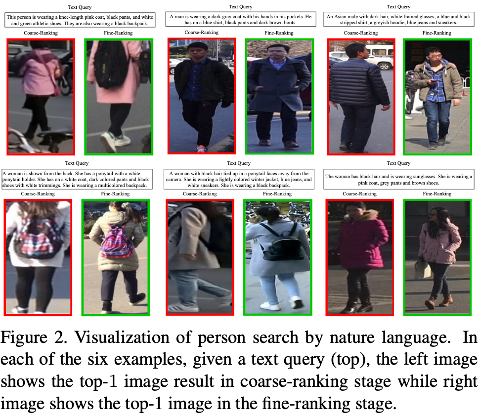

Cross-Model Person Search: A Coarse-to-FineFramework using Bi-directional Text-Image Matching
[Paper]
Abstract
Searching person images from a gallery based on natu- ral language descriptions remains to be a challenging and under-explored cross-modal retrieval problem. To improve the accuracy off an image-based retrieval task, e.g., person re-identification (Person Re-Id), re-ranking is known to be an effective post-processing tool. In this paper, we extend re-ranking from uni-modal retrieval to cross-modal retrieval for the first time, and develop a bi-directional coarse-to-fine framework (BCF) for cross-modal person search. Built on a recent state-of-the-art Person Re- Id model , BCF exploits first text-to-image and then image-to-text relevance, in a two-stage refinement fash- ion. BCF ranks competitively against a strong baseline on the newly-introduced WIDER Person Search dataset , boosting validation set performance by 9.01% (top-1) / 3.87 % (mAP) for val1 and 6.60% (top-1) / 3.49% (mAP) for val2, respectively. With a high score, our solution ranks competitively in the ICCV 2019 WIDER Person Search by Language Challenge.
